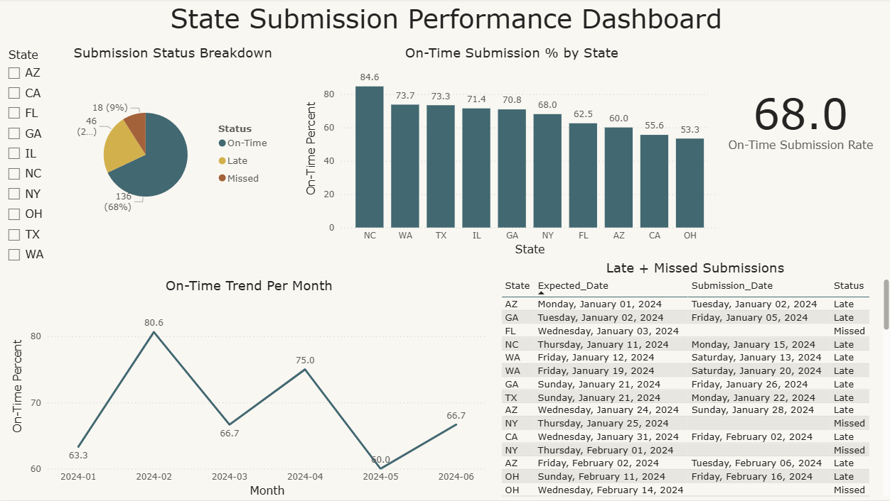
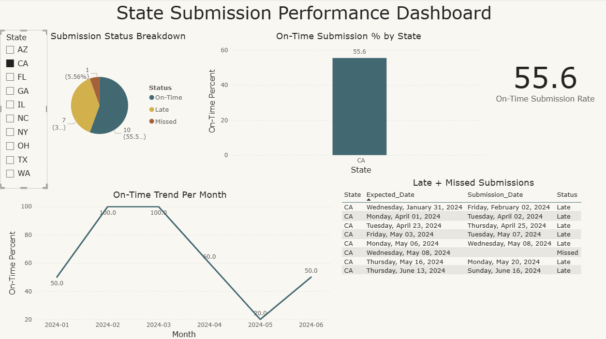
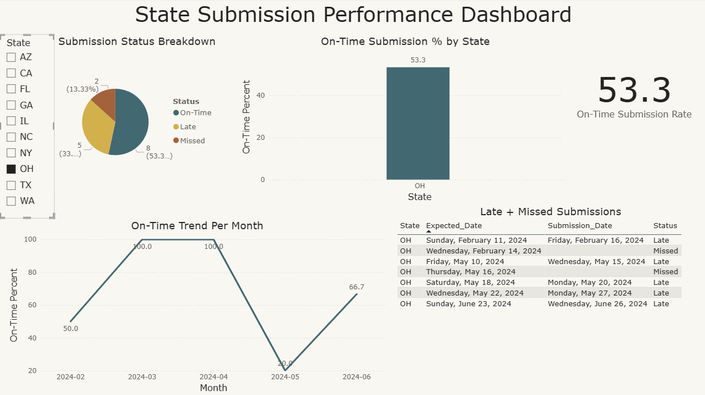

The State Submission Performance Dashboard is an interactive data analytics project designed to track and visualize the timeliness of data submissions from various U.S. states. Using a mock dataset simulating six months of submission data, the dashboard highlights key performance indicators (KPIs) such as on-time submission rates, late and missed submissions, and monthly performance trends.
The project demonstrates my ability to:
It was developed to mirror real-world reporting scenarios, making it relevant for compliance tracking, operations performance monitoring, and public sector analytics.



This project was built using: